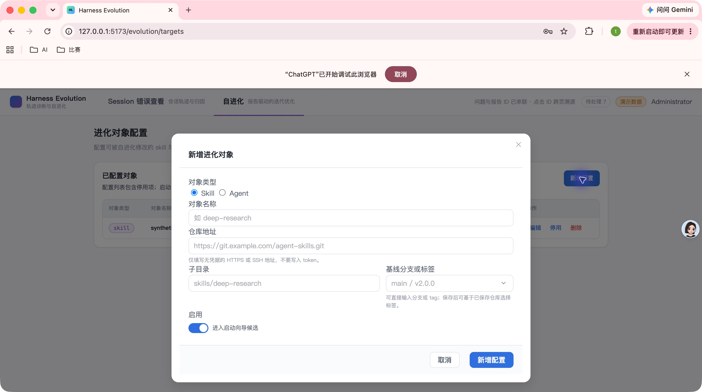
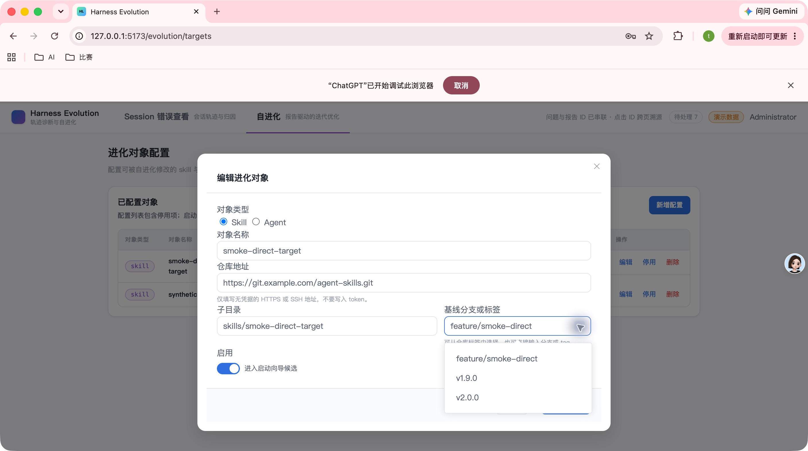
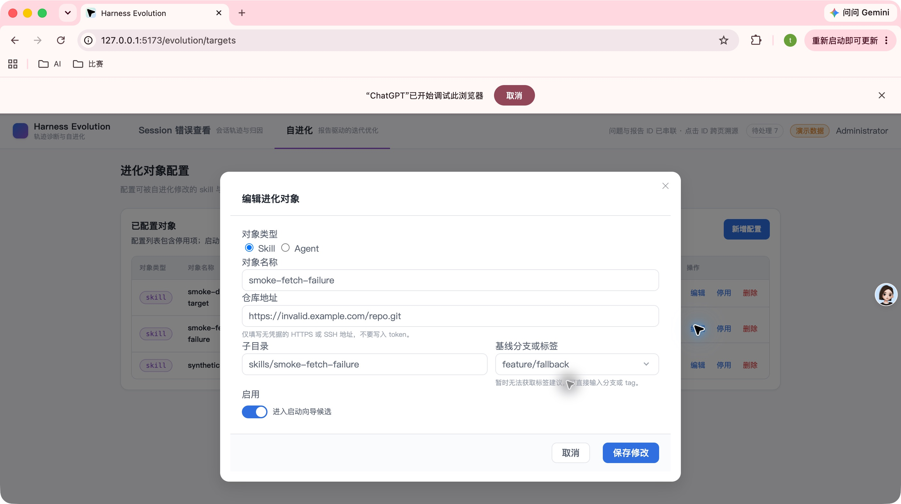
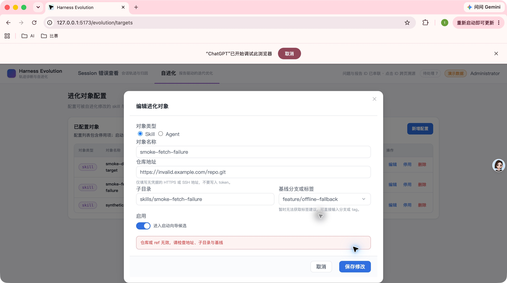
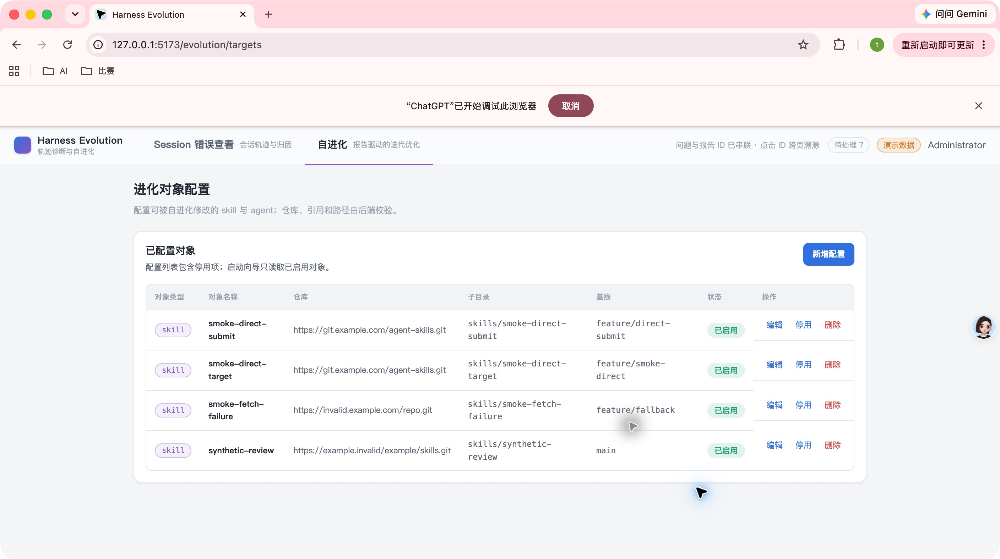

- PR
- #158
- Head commit
- afe11ad
- 页面
- /evolution/targets
- 后端
- 确定性 GitRemote + 临时 SQLite
- 浏览器
- Google Chrome / Computer Use
COMPUTER USE SMOKE
Issue 153 真实 UI 集成冒烟
最终 PR head 上完成进化对象配置页的真实 Chrome + API 集成验证。手填基线可直接保存、下拉建议可用、建议失败不阻塞、新增态无伪加载，异常提交保留全部输入。
12冒烟场景
12PASS
0FAIL
0WARN
Environment and Artifact
2026-10-29 · macOS · Chrome · SQLite fixtureScenario Matrix
12 pass| # | 场景 | 结果 | 实际断言 | 证据 |
|---|---|---|---|---|
| 01 | 打开配置页 | PASS | 管理员登录后进入进化对象配置，列表与新增入口可见。 | screenshots/01-target-page.jpeg |
| 02 | 新增浮窗初始态 | PASS | 无 target id 时不显示版本 loading；基线字段可直接输入并提供展开按钮。 | screenshots/02-create-initial.jpeg |
| 03 | 手填后失焦 | PASS | 输入 feature/smoke-direct 后点击其他字段，基线值保持不变。 | screenshots/03-filled-before-submit.jpeg |
| 04 | 手填后直接提交 | PASS | 不按 Enter、不选建议，直接点击新增；对象成功加入列表且基线保持正确。 | screenshots/04-direct-submit-saved.jpeg |
| 05 | 展开 tag 建议 | PASS | 编辑已保存对象并点击右侧展开按钮，显示当前 ref、v1.9.0 与 v2.0.0。 | screenshots/05-tag-dropdown.jpeg |
| 06 | 鼠标选择建议 | PASS | 点击 v1.9.0 后输入框回填并关闭建议层。 | screenshots/06-click-tag-selected.jpeg |
| 07 | 键盘选择建议 | PASS | 真实浏览器中执行 ArrowDown、ArrowDown、Enter 后，输入框从当前分支变为 v1.9.0。 | screenshots/05-tag-dropdown.jpeg |
| 08 | 仓库草稿变化提示 | PASS | 修改 repoUrl 后提示明确说明建议来自已保存配置，保存后才重新读取。 | screenshots/07-repo-change-note.jpeg |
| 09 | 建议获取失败回退 | PASS | 无效仓库的 tag 请求失败后显示可直接输入提示，输入框保持可编辑。 | screenshots/08-fetch-fallback.jpeg |
| 10 | 422 后保留输入 | PASS | 无效仓库/REF 保存返回错误，浮窗保持打开且全部字段和手填基线保留。 | screenshots/09-422-preserved.jpeg |
| 11 | 单字符清除旧错误 | PASS | 空表单提交后输入一个字符，基线的请填写错误立即消失。 | screenshots/10-single-char-clears-error.jpeg |
| 12 | 可访问性与最终直接提交 | PASS | 标签、展开按钮与启用开关均有可读语义；最终再次手填并直接新增成功。 | screenshots/11-direct-submit-saved.jpeg |
Issues and Observations
No defects foundNo defects were found.
Evidence
5 screenshots




Automated Coverage Assessment
3 areas reviewed| 区域 | 自动覆盖 | 结论 | 建议 |
|---|---|---|---|
| 基线受控值与失焦 | 组件单测 + E2E | 直接输入、失焦和提交均有自动化覆盖。 | 保留真实浏览器冒烟作为版本验收。 |
| 建议展开、鼠标和键盘选择 | 组件单测 + 本轮真实 UI | 三种路径均可用。 | 后续可把键盘路径加入浏览器 E2E。 |
| loading、失败与 422 | 组件/页面单测 + E2E + 本轮真实 UI | 无伪 loading，失败不阻塞，错误后输入保留。 | 维持临时 fixture 隔离。 |
Conclusion
集成冒烟通过12 个场景全部通过，未发现需要提交新检视意见或进入修复循环的缺陷。
- 测试使用确定性 GitRemote 与临时 SQLite，未访问外部生产仓库。
- API/Web 与测试标签页已关闭，临时数据已清理。
Issue #153 · PR #158 · head afe11ad